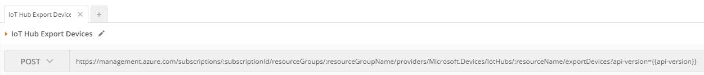
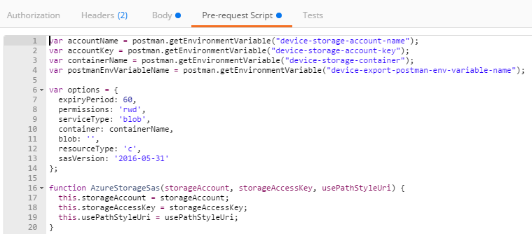
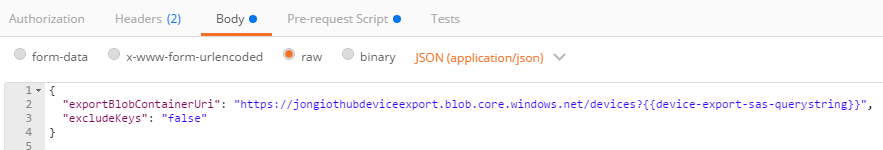
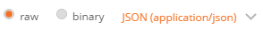
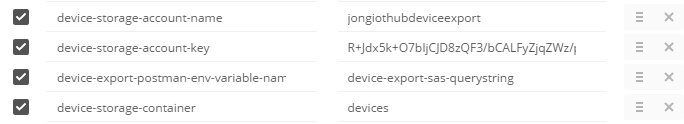
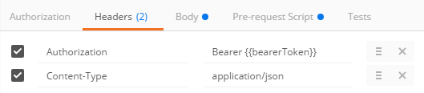
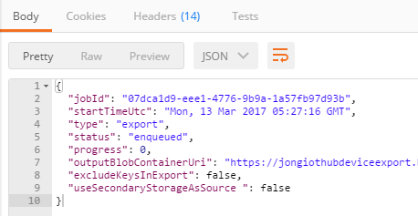
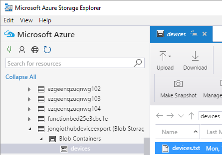
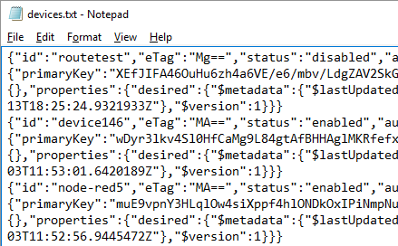
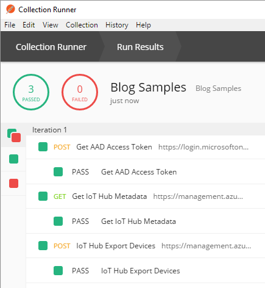

I’m working on a project that should make it much easier for developers to consume REST APIs that use SAS Tokens with Swagger and Postman. If you don’t already know, Postman is an app that allows you to easily test REST APIs. I’m in the process of attempting to demonstrate that Postman is an amazing tool to not only test APIs, but all be a primary usage communication mechanism for REST APIs. What I think is missing from most documentation is thorough examples of exactly how to use an API…including generating all the complex authentication tokens needed to execute those APIs. Postman can fill that gap - but getting SAS tokens for Postman requests is not as straight forward as it can be.
Click here to jump right to the GitHub repo azure-sas-tokens-postman that contains all you need to get started with Azure Storage SAS Tokens in Postman.
I want a development team to be able to point a user of their REST API to a Postman collection file which fully describes how to use the API, with executable code samples - and SAS token generation code. I also want them to be able to do that without any dependencies on any other services.
To prove this out, I’m starting with the Azure IoT Resource Provider REST APIs. The docs can be found here: Azure IoT Resource Provider REST API Docs and the Swagger file is here: Azure IoT Resource Provider Swagger
I’m still working on fleshing everything out for that API and I will post the full example soon, but I wanted to pause and blog about how I was able to get the Azure Storage SAS Token that is used in the Azure IoT Export Devices REST API. That is an API that allows you to export your Azure IoT device metadata to a blob in an Azure Storage account. In order to do so, you have to pass the full Azure Storage Blob URI with a SAS Token QueryString in the body of the device export request. You can find the docs for it here: Azure IoT Hub Export Devices API.
The API is straight-forward:
1. HTTP POST JSON payload to /exportDevices
2. API creates a job that exports Azure IoT Device Metadata to an Azure Storage blob.
The format of the REST API is as follows:
|
The format of the JSON payload is as follows:
|
As you can see from the Export Devices API docs that JSON format is not actually documented and it doesn’t tell you that you need to provide a container and a SAS Token QueryString. Through some interweb sleuthing, I was able to find this page: Azure IoT Device Management in Bulk - where I discovered that the exportBlobContainerUri had to have a SAS Token QueryString.
Wouldn’t it be nice if there was a sample that we could run to show us everything we need to do to consume the REST API? Yes, it would, continue reading…
I’m a huge fan of Postman as a REST API usage communcation mechanism, not just a REST API execution engine.
I want to be able to post a URL to my Postman collection, have you run it and you see actual requests being executed with live data, accurate JSON payloads, headers, response codes…everything.
The problem comes when you need to do things like generate SAS tokens to be embedded in JSON payload. At first, I wanted to code the SAS Token generation myself in the Postman Pre-request Script block, but I gave up because I couldn’t get the SAS token stringToSign just right. SAS generation is complex and the documentation is incorrect. So, then I tried using an Azure Function that my Postman collection could call to get the SAS token. But that violated my rule of no other HTTP dependencies. So, then I was back to the Pre-request Script block, but this time I had an idea to borrow the SAS token generation code from the official Azure Storage Node SDK and convert it to a one-script-file that could be copied and pasted into the Pre-request Script block. The problem with that approach is that the Postman Pre-request Script block is a sandbox that only allows certain npm packages, like lodash, crypto-js and a few others. The Azure Storage Node SDK uses a lot more than that and different packages, like underscore and crypto. You can find all of the SAS related code in the Azure Storage Node SDK here: Azure Storage Node SDK SAS Token Code.
My first step in figuring this out was to see if I could convert the Azure Storage SDK to use lodash and crypto-js so it could work with Postman. It took me a couple of hours, but I got all of the non-Postman-compatible dependencies ripped out and got it to work.
The next step was making it easy for a consumer to reuse the SAS code in their own Postman projects. I refacted all of the code into a single file and pushed it out to a new GitHub repo: azure-sas-tokens-postman.
The full steps for generating the Azure Storage SAS Token are in the GitHub readme, but the gist is:
1. Copy the azure-sas-tokens-postman/azure-storage/azure-storage-sas-postman.js file to Postman Pre-request Script sandbox.
2. Set some environment variables: account-name, account-key, container-name.
3. Execute the request and use the SAS Token QueryString in subsequent requests.
Here’s a complete example using the Azure IoT Export Device REST API.
Azure IoT Export Devices Example
1. Open Postman and setup the AAD Token
As described in this blog post: How to Use Azure Active Directory (AAD) Access Tokens in Postman
2. Create a new Postman request and copy the following URL into the URL textbox
|

3. Copy the azure-storage-sas-postman.js file to the Pre-request Script sandbox.

4. Copy the following JSON payload into the body tab:
|

Make sure you select ‘raw’ and ‘application\json’

5. Create the following Postman environment keys:
You will add these as new keys. Use name, key and container values from your Azure Storage account.
device-storage-account-name:jongiothubdeviceexport
device-storage-account-key:R+Jdx5k+O7bIjCJD8zQF3/bCALFyZjqZWz/pVdtNZqn2O/+HA+0CAZGVuKz3tqh7Lw==
device-export-postman-env-variable-name:device-export-sas-querystring
device-storage-container:devices

You will have these from the AAD/Postman blog post, more on that here.
subscriptionId:f9766876-e50b-436f-9ad3-5afb7bb8cf45
resourceGroupName:jongrg
resourceName:jongiothub
api-version:2016-02-03
clientId:483d39c4-7124-47fc-b5e0-4745d0887fc5
clientSecret:DvtpVwsoZvKJ/+gXQk+5CGRGR7IWU2za
tenantId:72f988bf-86f1-41af-91ab-2d7cd011db47
6. Verify that you have the ‘Authorization’ and ‘Content-Type’ headers set.

7. Send the request and you will see the following output:
|

8. Then, using Azure Storage Explorer, view your devices.txt file.


Postman Collection Runner
I’ll blog more about this soon, but the real beauty of Postman is that it gives you the ability to execute all requests in a collection and using their Collection runner like this:

Newman Postman Collection Runner (on Server)
You can then fully automate your REST API tests with newman on the server.
This command:
|
Will execute all your requests in the collection and give you a pass/fail output like this:

Like I mentioned before, I’m not quite done with the Azure IoT REST in Postman project, but I will continue to blog after I reach each milestone.
Jon